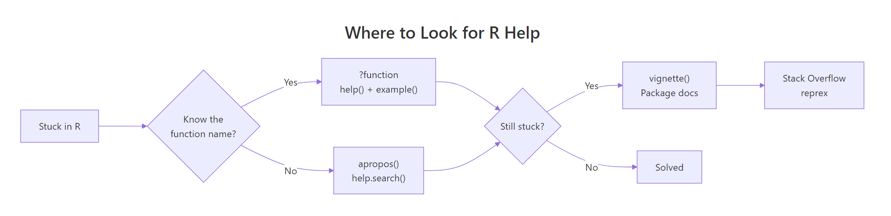
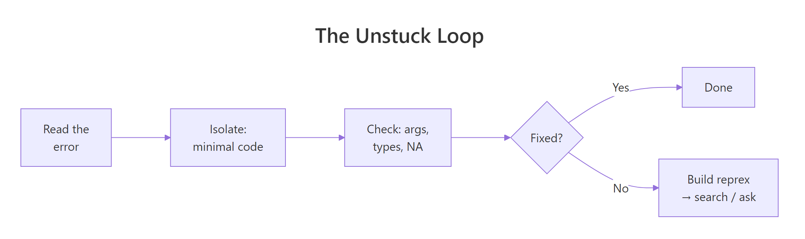

Stuck in R? 6 Ways to Get Unstuck Without Wasting Hours
When you're stuck in R, you don't need Google, you need ?function_name. R ships with a help system that covers every function, and between help(), example(), vignette(), apropos(), and a clean reprex, most problems are 60 seconds away from being solved without ever leaving your R session.
What's the fastest way to look up a function you already know?
A single question mark in front of a function name opens its help page instantly. That's the one shortcut every R user types hundreds of times a week, and it almost always contains the answer you were about to Google.
The help page follows a consistent structure: Description (one-line summary), Usage (the signature with defaults), Arguments (what each parameter does), Details (gotchas and edge cases), Value (what gets returned), Examples (runnable code). Learn to jump straight to Arguments and Examples, that's 90% of what you need.

Figure 1: R's help system handles most questions before you ever open a browser. Use ? first, vignette() for tutorials, reprex only when asking humans.
?mean is shorthand for help("mean"). They're identical, use whichever feels faster. For operators and reserved words you need quotes: ` ?+ or help("if")`.
help("filter", package = "dplyr") to target the one you want. This is the cure for "why is filter() giving me a signal-processing function?"Try it: Look up ?round. How many arguments does it take, and what does digits default to?
Click to reveal solution
round() takes two arguments and digits defaults to 0, which is why round(3.7) returns 4, no decimals kept. You can read this straight off the Usage line of the help page, which is always the fastest way to answer "what arguments does this take and what do they default to?"
How do you find a function when you only remember what it does?
This is the harder case, you want to reshape a data frame but can't remember if it's pivot_longer, melt, reshape, or something else. Two tools cover it: apropos() for partial name matching and help.search() (shortcut ??) for full-text search across help pages.
apropos() lists every loaded object whose name contains the pattern. It's great when you know the target function's name starts with or contains a specific word.
?? (help.search) scans help-page text, so it finds functions by description not just name. Searching for "linear model" surfaces lm, glm, lm.fit, and regression diagnostics, even if none of those names contain the word "linear."
apropos() searches names. ?? searches descriptions. When you know roughly what the function is called, use apropos(). When you know what it does, use ??.The ^ anchor is a regex, apropos() accepts regular expressions, so you can narrow results when a common prefix produces too many hits.
Try it: Use apropos() to find everything in base R with "lm" in its name. Then use ??"logistic regression" to find functions for logistic regression.
Click to reveal solution
apropos("lm") matches any loaded object whose name contains "lm" as a substring, so you get lm itself plus its helpers (lm.fit, summary.lm, predict.lm) and also unrelated hits like colMeans. The ?? search is description-based: it finds glm because its help page describes logistic regression, even though the word "logistic" doesn't appear in the name.
Why is example() the most underused help command?
Every help page has an Examples section at the bottom. Instead of copy-pasting them, you can run them all with one call: example(function_name). R pipes each example into the console, one at a time, so you can watch the output interactively.
That's the entire ?mean examples section running live, including the trim argument demonstration that most beginners never notice. It's the fastest way to go from "I read the help page" to "I actually understand how this behaves on real data."
For functions with plotting examples (like lm, ggplot, hist), example() draws every plot, you get a visual tour of the function's capabilities in one call.
Try it: Run example(plot) and watch what comes up. Then try example(strsplit) to see string-splitting in action.
Click to reveal solution
example(plot) runs every snippet from the ?plot help page live, including the plotting ones, so you get a free visual tour of what type = "l", "b", "s" and friends look like without copy-pasting anything. example(strsplit) is great for text functions: it shows the split = NULL trick for splitting into individual characters, which is rarely mentioned in tutorials but documented right there in the examples.
When should you read a vignette instead of a help page?
Help pages document individual functions. Vignettes are the long-form tutorials that package authors write to explain how pieces fit together. If ?dplyr::filter tells you what filter does, vignette("dplyr") tells you how to use filter with select, mutate, and group_by in a real workflow.
Vignettes are the difference between understanding a package as a pile of functions versus understanding it as a coherent tool. Any time you're learning a new package, check its vignettes before searching online, the author wrote them specifically to save you that search.
install.packages("pkg") by default includes vignettes; Bioconductor-style installs do too.Try it: List the vignettes available in your stats package with vignette(package = "stats"). (Base packages often have few or none, which is why you go to tutorials for the core language.)
Click to reveal solution
The stats package, home to lm(), glm(), t.test() and the rest of base R's statistics, ships with zero vignettes because base R packages predate the vignette system. That's why R's core statistical functions are documented function-by-function via ?lm etc., and why books like Modern Applied Statistics with S fill the tutorial gap. Contrast with dplyr, where the package authors wrote eight long-form tutorials specifically to stop users from having to Google.
How do you read an R error message without panicking?
An R error is not a wall of nonsense, it's a structured report with three layers you should read in reverse. The last line is usually the useful one; the rest is the call stack that led there.
R is telling you the exact problem: "hello" isn't numeric, so mean.default (the method it dispatched to) can't compute a mean. The fix is obvious once you read it, pass a number. But the first instinct of most beginners is to panic at the word "default" and paste the whole message into Google.
Two pieces of info: the error happened inside eval(predvars, data, env) (internals of lm), and the root cause is object 'y' not found, you referenced a column y that doesn't exist in the data frame. Ignore the internals, focus on the last clause.
Use traceback() right after an error to see the full call chain if the error happened deep in someone else's code. It shows which of your lines led to which internal call.
How do you ask a good Stack Overflow question (and get an answer in minutes)?
Some problems genuinely need human help, a weird edge case, a bug in a package, a design question. When you get there, the single biggest factor in getting a fast answer is the reprex: a minimal, self-contained example that someone else can copy-paste and run.

Figure 2: Most R problems resolve in the first three steps. The reprex step is for when you need someone else's eyes.
A good reprex has four qualities: minimal (smallest code that shows the bug), complete (anyone can run it as-is, with library() calls and data), reproducible (it actually triggers the problem), and readable (formatted code block, error output included).
The reprex package automates the formatting:
Here's a bad reprex and a good one, side by side.
The good version is 10 lines, runs standalone, shows the expected vs actual, and gives an answerer everything they need. You'll usually have your answer within the time it takes to post.
Try it: The next time you hit a bug, spend 5 minutes writing the reprex before searching. You'll often find the bug during the reduction.
Practice Exercises
Exercise 1: Find a function by description
Use R's help system to find a function that computes the correlation between two variables, without knowing its name. Then verify your answer by opening its help page.
Show solution
Exercise 2: Read the help page for a complex function
Open ?lm and answer these three questions just from the help page:
- What does the
subsetargument do? - What does the function return, a vector, a list, or a custom object?
- What does
na.actiondefault to?
Show solution
The "Value" section of every help page tells you what you get back. Reading it once saves hours of downstream debugging.
Exercise 3: Build a minimal reprex
You're seeing this error when trying to plot grouped data:
Error in FUN(X[[i]], ...) : only defined on a data frame with all numeric-alike variablesBuild a 6-line reprex that reproduces it using built-in data. Start with library() and a small data frame.
Show solution
colMeans needs all numeric columns; the name character column triggers the error. Six lines, completely self-contained, uses built-ins, anyone can run it.
Complete Example: Diagnosing a Mystery Function
Suppose you find stats::mahalanobis in someone's code and have no idea what it does. Here's the full "get unstuck" workflow using nothing but R itself.
You now know: mahalanobis() computes the Mahalanobis distance between points and a distribution, it takes a vector, a center, and a covariance matrix, and there's exactly one related function in base R. Total time: under a minute, zero browser tabs.
If at any point you're still confused, then you build a reprex and ask. But 9 times out of 10, the in-session tools are enough.
Summary
| You need to... | Use |
|---|---|
| Look up a function you know | ?name or help("name") |
| Find a function by partial name | apropos("pattern") |
| Find a function by description | ??"phrase" or help.search() |
| Run a help page's examples | example(name) |
| Read a long-form tutorial | vignette("pkg") |
| Trace an error's call chain | traceback() |
| Ask another human for help | reprex::reprex() |
Three habits that separate fast R users from stuck ones:
- Type
?functionbefore Googling. The answer is almost always on the help page; Google just adds latency. - Read errors in reverse. The last line is the actionable one. Ignore the internal call stack until you've read the root cause.
- Write reprexes even when you're debugging alone. Minimising the code reveals the bug about half the time before you even post anywhere.
References
- R Core Team. An Introduction to R, Getting help with functions and features.
reprexpackage documentation.- Wickham, H. Advanced R, 2nd ed., Debugging chapter.
- Stack Overflow, How to make a great R reproducible example.
- R Documentation:
?help,?apropos,?example,?vignette,?traceback. Run in any R session.
Continue Learning
- Write Better R Functions, once you've mastered help(), you'll want to write functions others can
?into. - R's Four Special Values, the most common source of mystery errors: NA poisoning a computation.
- Control Flow in R, understanding
ifandformakes tracebacks much easier to read.